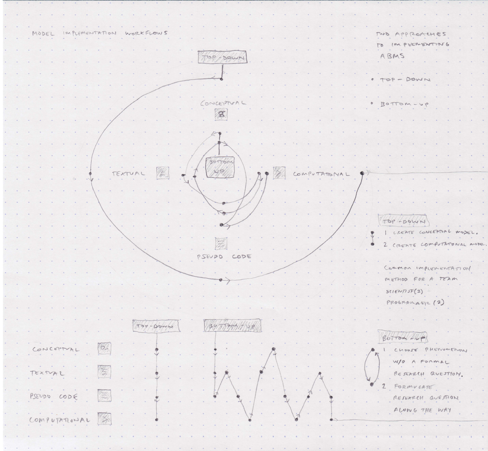

Emergent Migrations
Media: Agent-Based Modeling, P5js code Year: 2020 Support: Digital Futures Fellow at Hivos
Emergent Migrations is a proof of concept for using Agent-Based Modeling (ABM) to simulate, explore and visually describe international low-wage labour migration between Myanmar and Thailand. Being able to create a useful ABM requires domain specific knowledge, computational literacies, and mathematical fluencies, but being able to understand an ABM does not. This first model iteration explores ABM’s potential use for collaborations within interdisciplinary research teams and for disseminating research findings through narrative interactive visuals for a general public. Social simulations, such as ABMs, have increasingly been used as ‘touchstones’ to help facilitate theoretical and empirical debates around complex social phenomena. Emergent Migrations is the first iteration of an ABM that will be further workshopped and validated with interdisciplinary expert networks and groups of NGO, government and community stakeholders working on issues pertaining to low-wage labour migration.
An interactive version of the Emergent Migrations ABM is located at the end of the page. You can skip directly to it by clicking here.
Technical Background
A model is an abstracted representation of a real world system, process, object, event or phenomenon. A computational model is a model that takes specific inputs, algorithmically manipulates those inputs, and generates structured outputs. Modelling, the practice of model making, can help examine and understand phenomena that exist in the real world in a way that is more efficient and tractable than directly observing reality.
Many phenomena can be usefully modeled as an environment, a set of agents, and descriptions of agent-to-agent and agent-to-environment interactions. Systems that are composed of many distributed interacting parts are known as complex systems. Novel and coherent patterns, properties, and structures that arise from the interactions of multiple distributed elements in a complex system are known as emergent behavior. Agent-Based Modeling (ABM) is a computational modeling technique for representing, exploring, and explaining some complex systems that exhibit emergent behavior over time. Each of the elements (environment, agents, behaviors) in a complex system can be translated into computational rules that build the basis of an ABM.
General characteristics of Agent-Based Models include:
- properties, structures and complex patterns of behaviors are not explicitly stated, but “self-organize” and emerge from simple underlying rules.
- randomness in individual agent behavior can exist within consistent non-random population behavior.
Agent-Based Modelling can generally be useful when:
- one needs a temporally dynamic (time-based) understanding of a complex system.
- a complex system has an agent population larger than ~10 and fewer than ~10 million.
- a complex system has agents that exhibit heterogeneous spatio-temporal behavior and can change behavior and strategy1 based on past events.
Thematic Background
Low-wage labour migration between Myanmar and Thailand is a complex system that exhibits emergent behavior over time. This system is made up of millions of migrants, intermediaries (individuals that facilitate migration or employment processes such as travel or job placement), and employers. Agents exhibit heterogeneous spatio-temporal behavior that change to account for changes in social contexts, migration policy, land zoning laws, supply chains, monetary systems, weather patterns, and public health emergencies, like Covid-19 (Reuters, 2020).
A sizable body of research on labour migration exists, but many forms of traditional data analysis (statistical regressions, thematic analysis, etc.) and forms of data (narrative texts, static or moving images, etc.) fail on their own to accurately or comprehensively describe the temporal mechanisms within labour migration systems. As stated by experts in the broader field of multilevel modeling, “progress in most subjects of pressing societal concern is determined by our ability to design and solve multiscale models of the particular systems under study … system science is nothing other than the study of multiscale phenomena in the domain of interest, where understanding of the phenomenology turns critically on our ability to represent our account for interactions from multiple levels.” (Hoekstra et al, 2013) Programmatic intervention and policy responses need to be informed by a temporally dynamic understanding of the systems they are intervening to change in order to influence what are causally complex problems. In this case, to positively change the health outcomes of migrant workers and reduce systemic harm we first need to understand the mechanisms and processes that lead to entry into decent work versus labour exploitation.
There is no silver bullet in finding the solution to complex social problems, but Agent-Based Modeling coupled with other computational research methods can be used to attempt to fill in some of the known research gaps. Social science researchers are beginning to explore more computational modelling methods for applied research across a range of disciplines, such as public health (El-Sayed, 2012). In 2019, I contributed to an interdisciplinary research team on the border of Myanmar and Thailand that collected labour migration data with custom interactive data collection tools (Figure 1). This data will be used for future Agent-Based Modeling. However, regardless of the data collection method and type of data, research data on these complex problems are often inaccessible, inaccurate, out-dated, or unrepresentative. New methods can reveal unforeseen mechanisms at play in larger complex systems, but we must recognize a methods usefulness with its limits. There can also be extensive ethical and logistical constraints in collecting data from marginalised or hard-to-reach populations.

Figure 1. Screenshots from custom interactive network mapping tool
Building a First ABM
For the purpose of this proof of concept, one can think of exploratory ABM and phenomenon-based ABM as the two major categories of ABM.2 The categories lay across a spectrum of specificity to the research question that one wants answered by the ABM. Exploratory ABM lies across the less specific half of the spectrum. Phenomenon-based lies across the more specific half of the spectrum. The goal is to have an increasingly specific research question as one explores and iterates through the model design space.
With exploratory ABM, one uses general observations or theory to build a general model, compares the general model to observations, and slowly converges on an explanatory model. With phenomenon-based ABM, one uses a reference pattern to simulate the pattern, varies parameters to explore alternative patterns (counterfactuals), and approaches a candidate explanatory mechanism. This ABM is exploratory and is built from general observations and developed heuristics from on-site data collection on the border of Myanmar and Thailand. Future iterations of this ABM will be phenomenon-based and empirically informed by research data published in 2021.
There are many ways of designing ABMs and the development choice depends on:
- type of phenomenon
- level of knowledge in the content domain
- comfort with computational tools
- team structure
- resources and timelines
- personal taste
Two general approaches to implementing ABMs are Bottom-Up and Top-Down. Bottom-Up starts by picking a phenomenon without outlining a formal research question and iteratively developing the formal research question along the way. Top-Down starts by creating a conceptual model and afterwards building a computational model. Top-Down is a common approach used by research teams where scientists with deep domain knowledge create the conceptual model with special interest groups and afterwards programmers implement it as a computational model.
The first iteration of this ABM uses the Bottom-Up approach since this is my first ABM and I am working on a part-time team of one. I am comfortable with computational tools, but I do not have deep domain specific knowledge. Knowing this, I iteratively developed the research question by meeting with those who do have domain specific knowledge. This work has had meaningful and insightful input from Alys McAlpine (London School of Hygiene and Tropical Medicine), Dr. Ligia Kiss (UCL, Institute for Global Health), Dr. Zaid Chalabi (UCL, The Bartlett) and Professor Cathy Zimmerman (London School of Hygiene and Tropical Medicine). The recent development of this work has been supported by Tin Geber and the Digital Futures Fellowship team at Hivos. In collaboration with these academic partners, I am in the process of building ABMs informed by pre-existing theoretical conceptual frameworks and empirical analysis. This will eventually be a mixed bottom-up/top-down approach.
Figure 2. ABM Implementation Workflows (full scale view)
Bottom-Up Basic Principles:
- Start simple.
- Be alert to possible interesting questions.
- Start with a simple model related to the content domain or start with several simple components that might be useful in investigating the phenomenon.
- Review what one has built for promising directions.
- Conceptual model and computational model should co-evolve. Changes in one should drive changes in the other.
Top-Down Basic Principles:
- Start simple.
- Build towards the predefined research question.
- Build the simplest set of agents and behavior rules that can explore the phenomenon.
- Always think of the predefined research question. “Can progress be made without X?”
- Slowly add elements to the model.
Regardless of the chosen approach, it is important to ensure the computational model faithfully implements its target conceptual model. At every point in the development process the model should be able to provide some answers to the research question.
Emergent Migrations ABM
Research Question: How do individual intermediary-facilitated migrant pathways and larger labor migration corridors emerge within border regions?
I chose this ABM’s agent types by focusing on autonomous entities most related to the aforementioned research question. The agent types have more-or-less matching ‘granularity’ in terms of physical scale and temporal scale within the ABM. Emergent Migrations agent types:
- Migrant
- Intermediary
- Employer
As an aside, some ABMs can include homogeneous “proto-agents” that don’t have individual properties, states, and behaviors, but inherit general properties, states, and behaviors from a “global” agent prototype. All proto-agents are clones of their agent protype. These simplified, homogenous proto-agents can be useful, but are not included in this model. This model only includes three populations from three heterogeneous agent types.
Table 1 shows agent types, their properties, and their behaviors. Agent type properties distinguish one agent from all other agents within their agent type. Agent type behaviors distinguish the agent type from all other agent types within the ABM.
Table 1. Agent types with properties and behaviors

Figure 3. Agent Path Algorithm (full scale view) (Inspired by Simulating crowds based on a space colonization algorithm)
Environment
Environment attributes affect agent behavior. The values chosen should be in proportional spatial ‘granularity’ to the agent types. Global variables should always be classified as part of the environment. Global variables are often determined through the ABM interface.
Environment attributes:
- area width
- area height
- subareas:
- origin
- destination
- border
- total population of migrants
- total population of intermediaries
- total population of employers
- Time-horizon
The environment is an abstract spatial representation of the real physical space between Myanmar (origin) and Thailand (destination). It is more clear and efficient to for-go a literal highly-detailed geographic representation of the two bordering countries and instead simply represent Myanmar as a rectangle on the left, Thailand as a rectangle on the right, and a singular linear border in between the two countries. The Myanmar-Thailand border is notoriously porous and in large areas is physically manifested as bodies of water.
It is common for models with a rectangular-shaped environment to have a torus-like boundary condition where a moving agent will pass through the environment’s edge only to be relocated at the opposite end of the environment. NetLogo, a programming language designed for and dedicated to ABM, has a default preset of torus-like boundary conditions for new models and models in the NetLogo Library. The alternative is a walled boundary condition where a moving agent will collide with the environment’s wall and will continue to move in local space, but in another direction. The Emergent Migrations ABM operates with the walled boundary condition as it models a phenomenon within explicit boundaried physical spaces.
It can be useful to note while designing an ABM that some spatially static agent types can be reclassified as part of the environment. This will usually reveal itself through conceptual and computational development. Knowing this, a future iteration of this ABM could classify the Employer agent type as an environmental agent since it is static with limited behaviors.

Figure 4. Border crossing between Mae Sot, Thailand and Myawaddy, Myanmar
Figure 4 top right image: Google Earth satellite imagery of the Friendship Bridge border crossing between Mae Sot, Thailand (right bank of the river) and Myawaddy, Myanmar (left bank of the river). Figure 4 bottom image: While legally crossing the border by foot on the Friendship Bridge one can often look down the Moei River and see migrants illegally crossing the border (in this case, from Thailand back to Myanmar) via boat with transportation intermediaries. Figure 4 top left image: A Myanmar researcher documents the river passage (from the same boat ride as in the bottom image) by covertly riding the boat with migrants across the border. It is common for migrants to make daily, weekly, or monthly illegal trips across the border and these trips can often happen in broad daylight only meters from a legal crossing point like the Friendship Bridge. Migrants and authorities are aware of these informal transportation systems and other immigration subsystems that are often hiding in plain sight. These informal transportation systems are often not a part of the official immigration system that would be recognized in official data sources and reports. This is a good reminder that most of our best models are approximate at best. An interdisciplinary team can reveal blindspots in our understanding.
Time-Steps
ABM does not represent time as continuous, but as discrete steps in serial, ordered phases called time-steps. This representation of time has an implicit assumption that having agents perform their actions in a specific order will not substantially affect our results. This assumption may need to be reexamined later on in the development process. Another implicit assumption could be that any arbitrary fixed order would be reasonable. Order can significantly change results. Always note the working assumptions of your model to keep awareness and make changes if needed.
It is common to set a time-step limit, the time-horizon, for an ABM. Having a consistent number of time steps per model run allows researchers to analyze the model by comparing the model runs. The time-horizon should have a level of granularity that matches the particular phenomenon, for example a migration process might happen over days or weeks but a work day is only a number of hours. The model should utilize whatever time units makes most sense for the process being simulated.
Initialization of the model:
- Create an environment with an origin and a destination sub-section
- Create employers in the destination sub-section
- Create intermediaries across the origin and destination sub-sections3
- Create migrants in the origin sub-section
Model process each time-step:
Note that the agent ‘updates’ are determined by the properties and behaviours as listed previously in Table 1.
- Show environment
- Update employers: determine number of job openings
- Update intermediaries: determine next location
- Update migrants: determine next location and condition
- Show employers
- Show intermediaries
- Show migrants
- End loop if time-horizon is met
Making your own ABM
“No Models are correct, but some are useful.” - George Box
A lot can be understood about ABMs and complex systems through this learn-by-doing process, but this model is by no means perfect. There are a number of aspects of the ABM (and the research question) that will be changed in future iterations. In fact, we should always expect this to be the case! Remember that the goal is to have an increasingly specific research question as you explore and iterate through the model design space and you should ensure the computational model faithfully implements its target conceptual model of the research question.
For this sort of social simulation to be scientifically sound and rigorously implemented it requires thematic experts, technical experts, thorough research design processes, ethical reviews, and various scientific methodologies. ABMs can produce evidence on which to inform programs and policy and generally to understand real-world problems. However, this ABM is a playful proof of concept giving the visual and technical aspects of the conceptual and computational development.
If you want to try agent-based modelling, you can start with these provisional guiding questions:
- What part of the phenomenon would you like to build a model of?
- What are the principle types of agents involved in this phenomenon?
- Are there proto-agents?
- In what type of environment do these agents operate in?
- Are there environmental agents?
- What are properties of the agent types?
- What are the behaviors and actions of the agent types?
- How do the agents interact with each other and the environment?
- If you had to define the phenomenon in discrete steps, what events would occur in each time step and in what order?
- What do you hope to observe in this model?
Footnotes
- In Introduction to Agent-Based Modeling, Walinsky & Rand note that an agent’s behavior is different from an agent’s strategy. A change in strategy can often result in a change in behavior. However, a change in behavior does not necessarily result in a change in strategy. A strategy expresses how to behave in a particular set of circumstances.
- Sometimes a key distinction also made is whether the ABM aims to generate new theories (exploratory) or test theories (explanatory).
- Note that intermediaries are created after employers since employer initial positions are used to determine the initial position of intermediaries by randomly selecting areas not yet occupied by employers.